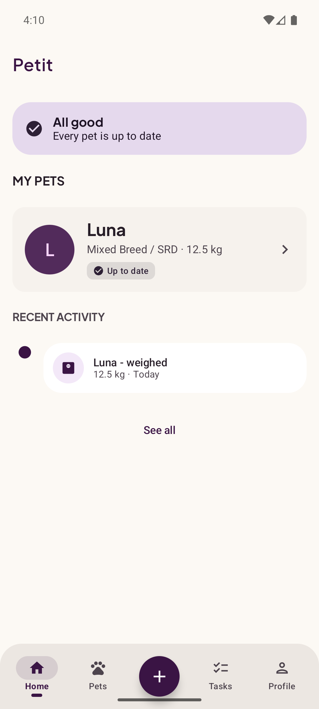
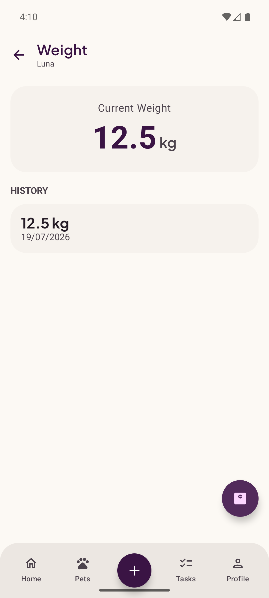
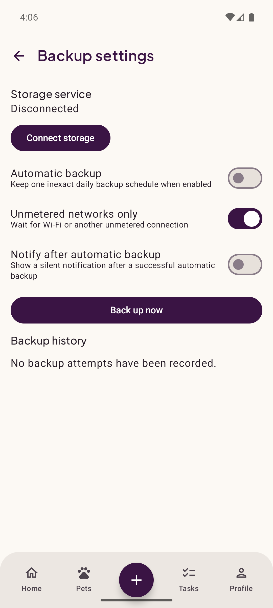
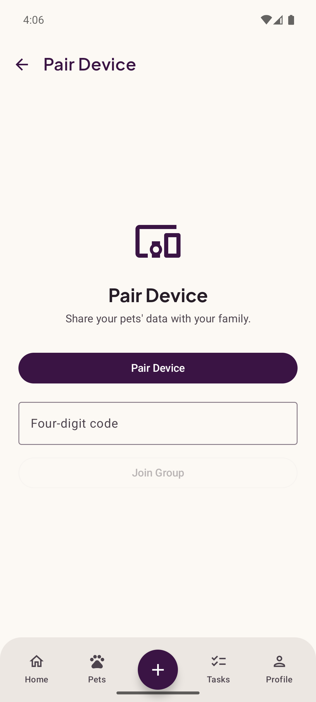

Local por padrão
Os recursos essenciais usam o armazenamento do seu aparelho e funcionam offline. Sem mensalidade para cuidar, registrar e consultar a rotina.
Organize saúde, rotina e lembretes com um app que funciona offline, mantém seus dados por perto e não cobra assinatura mensal pelos recursos locais essenciais.
Recursos hospedados futuros podem ter condições próprias. A promessa aqui cobre o Petit Local, o backup no Drive do usuário e o compartilhamento local.

O Petit foi desenhado para continuar útil sem uma conta Petit, sem internet constante e sem prender sua rotina a uma assinatura.
Os recursos essenciais usam o armazenamento do seu aparelho e funcionam offline. Sem mensalidade para cuidar, registrar e consultar a rotina.
Cada pessoa autoriza a própria conta. Os backups ficam no appDataFolder oculto do próprio Google Drive, sem passar por servidores do Petit.
Compartilhe pela rede local com dispositivos próximos, sem depender de internet ou infraestrutura hospedada pela Petit.
Um espaço prático para acompanhar diferentes pets e manter informações importantes organizadas.
Organize cães, gatos e outros companheiros sem limitar o cuidado a uma única espécie.
Acompanhe peso, vacinas e vermifugação com datas e histórico fáceis de consultar.
Transforme cuidados recorrentes em uma rotina simples, visível e confiável.
Leve uma cópia portátil dos dados e restaure com validação de formato e integridade.
Conecte dispositivos próximos para que mais de uma pessoa participe da rotina localmente.
Leia o código, acompanhe decisões, reporte problemas e contribua com o projeto público.
Telas reais do Petit executado em um emulador Android com dados demonstrativos.



O modelo local-first reduz dependências externas. Quando você usa o Google Drive, a autorização é da sua conta e o escopo é limitado aos dados privados do app.
Acompanhe o desenvolvimento, abra uma issue ou ajude a criar uma experiência melhor para pets e cuidadores.